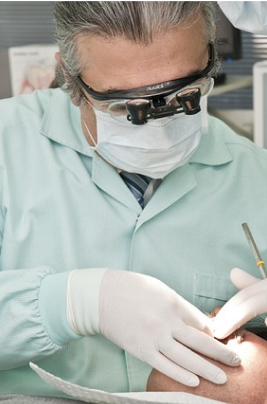
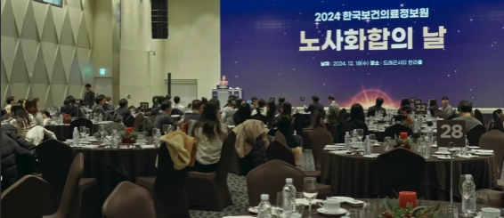
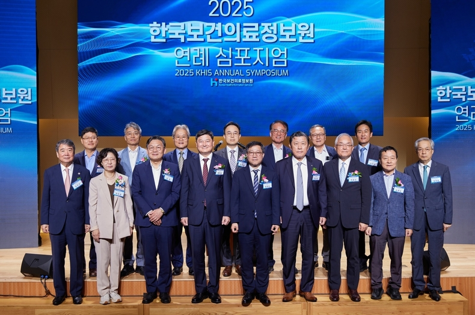
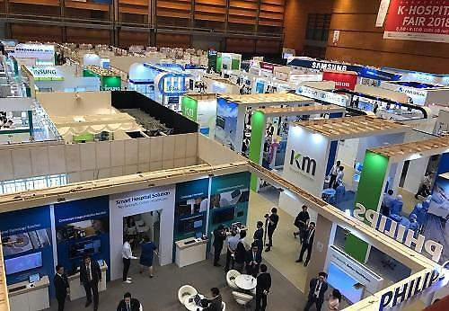

Korea Health Information Service
한국 건강 정보 서비스센터

의료정보 표준 사업

보건의료 데이터 관리

공공의료 정보 지원

한국정보의료원
한국보건의료정보원의 새로운 미래
i
ness Areas
i
shment
탄소중립·친환경
경영 실천
포용적 조직문화 및
사회적 책임 강화
신뢰받는
투명경영 실현

일시 : 2024년 12월 17일
장소 : 서울 코엑스
주요 내용 : 노사문화 유공자(개인), 지역노사민정협력 유공자, 노사문화대상 및 우리사주대상 기업 시상

일시: 2025년 9월 18일(목) ~ 19일(금)
장소: 서울 을지로 페럼타워 3층 페럼홀
주최 : 한국보건의료정보원
주요 참석자: 연민섭 한국보건의료정보원장, 정윤순 보건복지부
보건의료정책실장 등

일정: 2025년 9월 17일(수) ~ 9월 19일(금)
장소: 서울 코엑스(COEX) C, D홀
주최: 대한병원협회
규모: 약 300개 사 참여, 460부스 운영